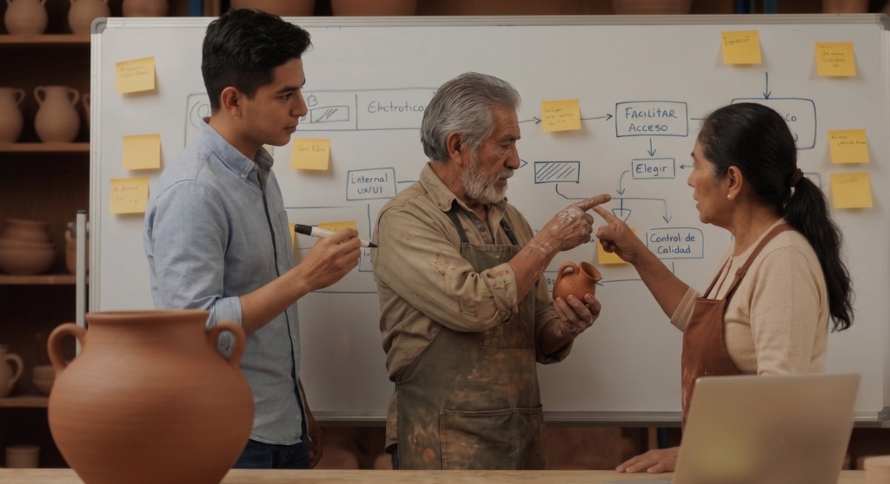
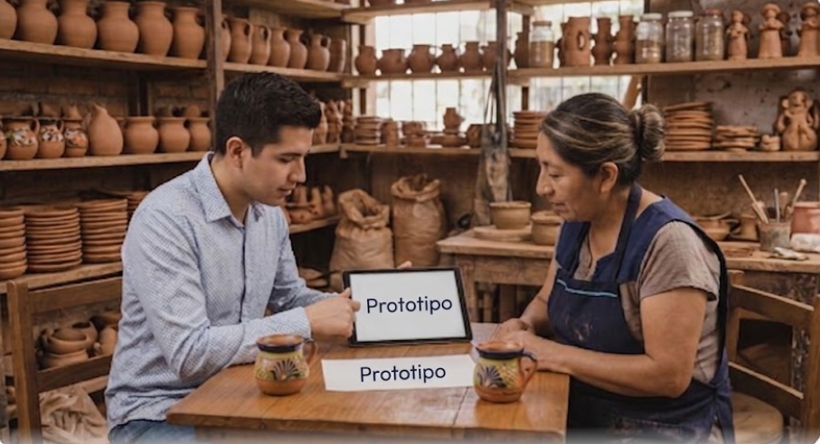

Ver transcripción
Elemento 2: Conceptualizar. Con las necesidades claras, viene la fase creativa — ideación, propuesta de valor y modelo de negocio del producto.
El estándar contempla tres documentos y dos desempeños observables: facilitar una sesión de ideación con el cliente y presentar la propuesta de prototipo.
En Tonalli, Diego practica esta función con Lucía para generar ideas sobre cómo resolver la descripción de piezas únicas con IA.
2.1 Visión general
En este tema se aborda el segundo paso de la creación de soluciones comerciales con IA en los procesos de la MiPyME, y que corresponde con el segundo elemento del estándar de competencia, que es "Conceptualizar soluciones comerciales con IA en MiPyMEs".
En este tema se considera facilitar sesiones de ideación de soluciones comerciales de bienes o servicios mediante el uso de IA y facilitar la sesión de presentación de la propuesta del prototipo con el cliente. También se contempla elaborar algunos productos que evidencíen esta fase, como son, el informe del proceso de ideación, la matriz de ideas de solución, el modelo de negocio y el diseño del modelo de funcionamiento.
2.2 Cómo se te evaluará en este elemento

Conceptualizar es trabajar codo a codo con el cliente: ideas viables que respeten su identidad. Es el segundo paso para la creación de soluciones comerciales con IA en la MiPyME. Recuerda que la evaluación de competencias, se compone por la valoración de diferentes tipos de evidencias, en la fase inicial de planeación, deberás demostrar lo siguiente:
| Tipo de evidencia | Cantidad | Cómo se valora |
|---|---|---|
| Desempeños observables | 2 desempeños | Te observan mientras facilitas una sesión de ideación con el cliente o usuario y presentas los hallazgos del Elemento 1, además de guiar la generación de ideas con metodologías como Design Thinking, SCAMPER, Crazy 8s, etc. El segundo desempeño trata de facilitar la sesión de presentación del prototipo. |
| Productos entregables | 4 productos | Tus productos se revisan contra los criterios del estándar. Son el informe del proceso de ideación, la matriz de ideas, el modelo de negocio y el modelo de funcionamiento del prototipo. |
| Conocimientos | 2 áreas (Conocimiento y Comprensión) | Se te aplica un cuestionario con preguntas de conocimiento en las 2 áreas de dominio aplicado. |
| Actitudes, hábitos y valores | 1 (Iniciativa) | Se observa que presentes iniciativa durante los desempeños. |
2.3 Facilitar la sesión de ideación de soluciones mediante IA
Revisemos ahora el detalle cuáles son los criterios que se deben cumplir en esa sesión de ideación, según el estándar:
Desempeño 2.1 · Facilitar la sesión de ideación de soluciones comerciales de bienes o servicios mediante el uso de la IA
- Presentándose ante cliente o usuario al mencionar su nombre completo y su rol como consultor, asesor o desarrollador de soluciones comerciales de bienes y servicios con IA.
- Presentando el objetivo de la sesión.
- Presentando al cliente la metodología a utilizar para la ideación de soluciones comerciales de bienes y servicios con IA.
- Exponiendo los problemas u oportunidades detectadas durante el diagnóstico.
- Realizando preguntas abiertas que faciliten la generación de ideas.
- Utilizando las herramientas, plataformas, aplicaciones o prompts para ideación de preguntas.
- Acordando con los asistentes una pregunta generadora orientada a resolver la necesidad o satisfacer la oportunidad del cliente.
- Construyendo con los asistentes las primeras ideas orientadas a satisfacer o resolver la necesidad del cliente o usuario al utilizar IA.
- Ampliando el alcance de la ideación de soluciones mediante el uso de herramientas, plataformas, aplicaciones o prompts.
- Clasificando verbalmente o por escrito las ideas en categorías de resultados, y
- Seleccionando las ideas que favorezcan una solución orientada a satisfacer la necesidad o resolver el problema del cliente.
Las actitudes, hábitos y valores del Elemento 2
Este elemento evalúa una sola actitud, hábito o valor (AHV): Iniciativa. El estándar la define como "la manera en que propone alternativas de solución y herramientas adecuadas al cliente y al contexto de la MiPyME."
Video ejemplo
A continuación, observa un video que ejemplifica cómo facilita Diego la sesión de ideación de soluciones.

2.4 Productos derivados de la conceptualización de soluciones
Revisemos ahora el detalle cuáles son los criterios que se deben cumplir estos productos, según el estándar:
Producto 2.1 · Informe del proceso de ideación
El informe del proceso de ideación debe contener al menos:
- Las preguntas generadoras de ideas formuladas a partir del problema priorizado.
- Las preguntas sobre oportunidades de mejora o innovación en soluciones comerciales de bienes o servicios.
- Las preguntas detonadoras seleccionadas para la generación de ideas.
- Las técnicas de ideación utilizadas.
- Las ideas obtenidas a partir de las preguntas generadoras de ideas.
- La reformulación de las ideas que facilitan o impulsan la generación de soluciones.
- Las herramientas y los prompts que se utilizaron en la sesión de ideación de soluciones comerciales de bienes o servicios.
- Se presenta en formato digital o físico, con redacción clara y sin errores ortográficos.
Producto 2.2 · La matriz de ideas de solución, validada por el cliente o usuario
Este producto debe contener al menos:
- El listado de ideas generadas durante el proceso de ideación.
- La descripción breve de cada idea de bienes o servicios propuestos.
- Una clasificación preliminar de las ideas según criterios de novedad, utilidad y factibilidad.
- Las oportunidades de implementación de tecnologías digitales o de IA identificadas y validadas por el cliente o usuario.
- Las ideas seleccionadas por el cliente.
- Se presenta en formato de matriz o tabla de análisis, en formato digital o físico, con redacción clara y sin errores ortográficos.
Producto 2.3 · El modelo de negocio
Este producto debe contener al menos:
- La descripción del valor diferencial de la idea respecto a soluciones convencionales.
- La descripción de la propuesta de valor comercial en el contexto de la MiPyME, en una frase.
- Los segmentos de clientes.
- Las formas de relación con el cliente y los canales de comunicación o distribución del modelo de negocio.
- Los recursos y actividades clave necesarias para la operación.
- Las fuentes de ingresos asociadas al bienes o servicios.
- Los costos de desarrollo, operación y mantenimiento.
- Las alianzas clave para la operación y desarrollo del bien o servicio, y
- Se presenta en formato digital o físico, con redacción clara y sin errores ortográficos.
Producto 2.4 · El diseño del modelo de funcionamiento del prototipo de la solución con IA
Este producto debe contener al menos:
- Las funcionalidades clave del prototipo de la solución propuesta.
- La definición de los datos de entrada requeridos y los resultados esperados del componente de IA.
- Las herramientas o plataformas de IA aplicables al desarrollo del prototipo de la solución.
- La justificación de la selección de las herramientas o plataformas de IA alineadas a las necesidades y recursos de la MiPyME.
- Los flujos de interacción de usuario con el prototipo de la solución.
- La arquitectura del prototipo de la solución.
- La representación visual y la descripción de los requerimientos de diseño gráfico.
- Los costos de desarrollo y operación del prototipo de la solución.
- La definición de los requerimientos técnicos mínimos del prototipo de la solución para su operación en el contexto de la MiPyME.
- Las consideraciones de protección de datos personales y uso ético de IA aplicables al prototipo.
- Las consideraciones de propiedad intelectual aplicables al bien o servicio.
- Los términos de servicio de las herramientas o plataformas de IA utilizadas y la legislación mexicana de derecho de autor, y
- Se presenta en formato digital o físico, con redacción clara y sin errores ortográficos.
Descarga los 3 templates editables (2 Word + 1 Excel)
El Elemento 2 produce 3 documentos de la fase creativa: el informe de ideación, la matriz de ideas y el modelo de negocio. El Producto 2.3 es el más completo: integra el Business Model Canvas con el diseño técnico del prototipo (22 criterios estándar). Adapta cada template a tu proyecto real.
2.5 Facilitar la sesión de presentación de propuesta del prototipo

Revisemos ahora el detalle cuáles son los criterios que se deben cumplir en esta sesión, según el estándar:
Desempeño 2.5 · Facilitar la sesión de presentación de propuesta del prototipo con el cliente o usuario
- Presentando el objetivo de la sesión.
- Exponiendo las características técnicas y funcionales de la propuesta del prototipo.
- Validando la propuesta económica del prototipo con el cliente, y
- Solicitando retroalimentación y visto bueno verbal o por escrito por parte del cliente para el desarrollo del prototipo.
Video ejemplo
A continuación, observa un video que ejemplifica cómo facilita Diego la sesión de presentación de propuesta del prototipo.
2.6 Conocimientos del elemento 2
El estándar exige el dominio de 2 áreas de conocimiento para este segundo elemento a un nivel de comprensión, lo que implica que puedes explicar el concepto y reconocer su aplicación. Observa las áreas de conocimiento que se te evaluarán y corresponden al elemento 2:
| Área de conocimiento | Nivel | Lo que debes poder hacer |
|---|---|---|
| Metodologías/técnicas de ideación | Comprensión | Explicar las diferencias entre metodologías y seleccionar la más adecuada para el contexto de la MiPyME. |
| Modelo de negocio: Business Model Canvas, Lean Canvas, propuesta de valor | Comprensión | Aplicar el BMC o Lean Canvas para estructurar el modelo de la solución propuesta y articular la propuesta de valor en una frase. |
2.7 Ponte a prueba
Ponte a prueba, ¿qué tanto sabes sobre los conceptos que debes dominar en cuanto a la fase de conceptualizar soluciones comerciales con IA? Estos corresponden al elemento 2 del estándar. Responde estas preguntas para saberlo. Este pequeño cuestionario no tiene valor sobre tu calificación del curso, es únicamente un ejercicio para que puedas repasar los conceptos.
Instrucciones: Lee cuidadosamente la pregunta o enunciado, posteriormente selecciona la respuesta que consideres correcta.
Pregunta 1 · Metodologías/técnicas de ideación
Vas a aplicar una técnica que estimula la creatividad obligándote a analizar una solución o proceso existente mediante siete verbos de acción transformadores: sustituir, combinar, adaptar, modificar, poner en otros usos, eliminar y reorganizar. ¿A qué técnica de ideación corresponde esta descripción?
Pregunta 2 · Metodologías/técnicas de ideación
Estás aplicando un proceso altamente estructurado que se desarrolla en cinco días. Durante esta dinámica partes de un reto claro, seleccionas la idea con mayor potencial, construyes un prototipo rápido y lo validas directamente con usuarios reales al finalizar la semana. ¿Qué metodología de ideación e innovación estás utilizando?
Pregunta 3 · Modelo de negocio
Decides utilizar la herramienta Value Proposition Canvas (Lienzo de Propuesta de Valor) para estructurar el modelo de negocio. ¿Cuál es la estructura distintiva y el foco principal de esta herramienta?
Decide rápido · ¿Esta descripción tiene modelo de negocio o le falta algo crítico?
Lucía y Diego generaron varias ideas en la sesión. Para cada una, decide si cumple el criterio del estándar para modelo de negocio (propuesta de valor + segmento + ingreso) o si le falta algo esencial.
Terminaste el Elemento 2 · Conceptualizar la solución
Ya sabes cómo conceptualizar una solución de IA con base en las necesidades identificadas. Lo que sigue: construir el prototipo funcional.